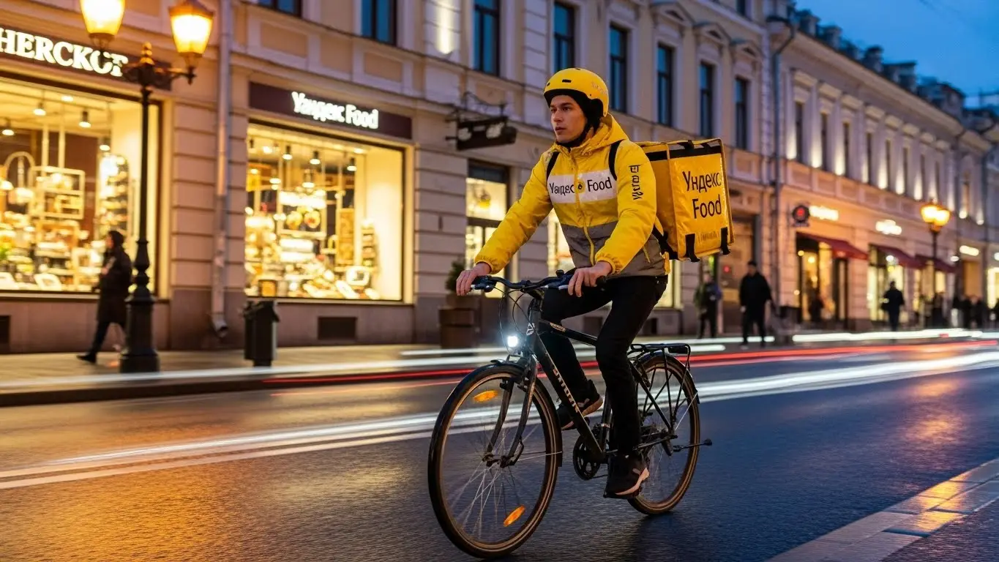

Работа курьером Яндекс Еда в Пятигорске 2025-2026: доход и условия
- Работа курьером Яндекс Еды в Пятигорске: для кого эта вакансия и что вы получите
- Сколько вы будете зарабатывать курьером в Пятигорске: калькулятор дохода и разбор выплат
- Реальный заработок курьера в Пятигорске: смены и месячный доход
- График работы и форматы занятости
- Требования к кандидату и документы
- Самозанятость, налоги и юридическая чистота
- Пошаговое оформление и первый выход на линию в Пятигорске
- Пешком, на вело или на авто: что выгоднее в Пятигорске
- Районы, маршруты и «топовые» зоны заказов в Пятигорске
- Безопасность, страховка, штрафы и оплата простоя
- Плюсы и возможные минусы работы курьером в Пятигорске
- Реальные истории и отзывы курьеров из Пятигорска
- Ответы на главные вопросы о работе курьером Яндекс Еды в Пятигорске
- Короткие ответы на главные вопросы
- Заключение: твой старт в Пятигорске
Все города
Здорово, будущий коллега! Думаешь, работа курьером Яндекс Еда в Пятигорске — это просто крутить педали или руль и получать деньги? Как бы не так. Готов тащить заказ в гору на Белую Ромашку под дождем, стоять в пробке у «Вершины» в час пик и гадать, покроет ли заработок бензин и ремонт? Если в голове крутятся эти вопросы, а рекламные обещания про «золотые горы» вызывают скепсис — ты по адресу. Я расскажу, как всё устроено на самом деле, без розовых очков.
Поверь, многие новички в Пятигорске сходят с дистанции в первый же месяц. Не потому что работа плохая, а потому что они не понимают её «внутрянку»: не считают реальные расходы, не знают, как работает приоритет и где заказов густо, а где — пусто. В итоге катаются впустую, теряют рейтинг и разочаровываются. Чтобы ты не наступил на эти грабли, я и написал этот гид. Если тебе понадобится краткая сводка условий, калькулятор дохода и форма заявки, то вся информация про работу курьером Яндекс Еда в Пятигорске собрана на специальной странице.
В этой статье мы по косточкам разберём всё, что касается работы курьером Яндекс Еды именно в Пятигорске. Мы честно посчитаем, сколько реально можно заработать пешком, на велике или авто с учётом наших цен и рельефа. Я покажу на карте самые «хлебные» районы и время для работы. Расскажу, как погода и туристы влияют на спрос, за что на самом деле прилетают штрафы и как их не получать. И, конечно, сравним условия с другими доставками, которые есть у нас в городе.
Меня зовут Алексей. Я сам не один год откатал с жёлтым рюкзаком по Пятигорску, а сейчас у меня свой небольшой таксопарк-партнёр, так что я вижу всю эту кухню с двух сторон. Здесь не будет рекламы и пустых обещаний. Только мой личный опыт, цифры и советы, которые помогут тебе стартовать правильно и не слить первый же заработок на штрафы и ремонт. Ну что, погнали? Разложу всё по полочкам.
Чтобы тебе было проще сориентироваться, я подготовил короткий навигатор по главным темам статьи.
Что ты точно узнаешь из этого гида
В этой статье ты ТОЧНО узнаешь:
- Сколько реально заработать в Пятигорске за смену пешком, на велосипеде или авто, и от чего зависит итоговая сумма?
- Какие районы Пятигорска самые выгодные для работы и в какое время суток лучше выходить на линию, чтобы не кататься впустую?
- Что выгоднее для рельефа Пятигорска — ходить пешком, крутить педали или работать на своей машине?
- За что на самом деле штрафуют и как работает система рейтинга, чтобы не потерять доступ к заказам?
- Что такое «оплата простоя» и как она защищает твой доход, если заказов в смене оказалось мало?
- Как за 10 минут оформить самозанятость и сколько налогов придётся платить с заработка?
А если тебе некогда читать всю статью — переходи сразу к заключению, где ты найдёшь короткие ответы на все эти вопросы и указания, в каких разделах искать подробности.
А для начала — вот ключевые цифры по заработку в Пятигорске в одной картинке.
Работа в Яндекс Еде в Пятигорске: ключевые цифры
Доход в час
350–500 ₽
В пиковые часы и с учетом бонусов за спрос
Заработок за смену
2800–4000 ₽
Средний доход за активный 8-часовой слот
Форматы работы
Пеший / Вело
Оптимальны для центра и курортной зоны города
Чаевые от заказов
10–15%
Дополнительный доход сверх оплаты от сервиса
Работа курьером Яндекс Еды в Пятигорске: для кого эта вакансия и что вы получите
Давай начистоту: работа в доставке — это не золотые горы, которые свалятся на тебя с неба. Это нормальный, честный труд, где твой заработок напрямую зависит от того, как ты к нему подходишь. Но если тебе нужны деньги здесь и сейчас, ты не боишься движения и ценишь свободу — это, пожалуй, один из лучших вариантов подработки в Пятигорске. Здесь нет начальников, стоящих над душой, и сложных требований, зато есть реальные деньги каждый день.
Кому подойдёт эта работа в Пятигорске
По моему опыту, в доставку приходят совершенно разные люди, и для многих она становится отличным решением. Эта вакансия точно для тебя, если ты:
- Студент. Учишься в ПГУ или медколледже и ищешь, как заработать на свои расходы, не забивая на пары. Можешь выходить на пару часов после учёбы или плотно поработать на выходных.
- Ищешь подработку. У тебя есть основная работа со сменным графиком или стандартная пятидневка, но денег не хватает. Включаешь приложение, когда удобно, и выполняешь несколько заказов вечером — плюс 15–25 тысяч к основной зарплате никому не мешали.
- Временно без работы или без опыта. Не нужно проходить сто собеседований и доказывать, что ты чего-то стоишь. Анкета, короткое обучение — и ты уже можешь зарабатывать. Идеальный вариант, чтобы перекантоваться или начать с нуля.
- Водитель-курьер. Если у тебя есть своя машина и ты устал от такси, доставка — хороший вариант. Меньше общения с людьми, понятные маршруты, а в плохую погоду или часы пик доход может быть даже выше.
- Ценишь свободу. Тебе важно самому решать, когда работать, а когда отдыхать. Здесь ты сам себе хозяин: планируешь слоты в приложении «Яндекс Про» и выстраиваешь свой день так, как удобно тебе, а не кому-то другому.
Главные преимущества для жителей районов Белая Ромашка, Квартал, Центр
Главный плюс этой работы в Пятигорске — возможность не мотаться через весь город. Ты можешь выбрать свой район и работать буквально в паре кварталов от дома. Это экономит и время, и силы, и деньги на проезд.
Например, живёшь в районе Белая Ромашка — здесь полно и жилых домов, и небольших кафе. Берёшь заказы и разносишь их по своему же району, который знаешь как свои пять пальцев. Если ты из Квартала или соседних микрорайонов, то же самое: доставляешь из местных магазинов и ресторанов по окрестным улицам. А если твой дом в Центре, то тут вообще золотая жила — концентрация заведений на проспекте Кирова и вокруг парка «Цветник» огромная, заказы есть почти всегда. Ты просто выходишь из дома и сразу начинаешь зарабатывать.
Что по деньгам и условиям на старте
Если говорить о деньгах, то цифры в Пятигорске вполне реальные. При частичной занятости, работая по 3–4 часа в день, можно стабильно делать 1500–2500 рублей за смену. Если же рассматривать это как основную работу и выходить на полные смены по 8–10 часов, то твой месячный доход может составить от 50 000 до 85 000 рублей и выше, особенно если ты на личном авто и берёшь выгодные слоты.
Самое важное — деньги ты получаешь практически сразу. Сервис предлагает ежедневные выплаты на карту, так что не нужно ждать зарплаты месяц. График полностью свободный — ты сам выбираешь дни и часы работы через приложение. И главное — начать можно без опыта. Тебя всему научат на коротком онлайн-инструктаже, выдадут термокороб, и можно выходить на линию.
Сколько вы будете зарабатывать курьером в Пятигорске: калькулятор дохода и разбор выплат
Главный вопрос новичка: «Сколько мне заплатят за один заказ?». Но это не совсем верный подход. Твой итоговый заработок — это не просто ставка, а сумма нескольких составляющих. Система в приложении Яндекс Про прозрачная, и если в ней разобраться, можно хорошо влиять на свой доход. Давай разберём по косточкам, из чего складываются твои деньги.
Из чего складывается доход курьера
Твой заработок за смену формируется из нескольких частей, и важно понимать каждую из них.
- Фиксированная оплата за заказ. Это базовая сумма, которую ты получаешь за то, что принял и выполнил доставку.
- Оплата за расстояние. За каждый километр пути от ресторана до клиента тебе начисляется доплата. В Пятигорске с его растянутыми районами это важная часть дохода, особенно для автокурьеров.
- Повышающие коэффициенты. В часы пик (обед с 12 до 15, ужин с 18 до 21), в выходные и в плохую погоду в приложении появляются зоны с повышенным спросом, отмеченные фиолетовым цветом. Заказы из таких зон оплачиваются дороже — в 1.5, а то и в 2 раза.
- Бонусы. Сервис часто предлагает персональные цели: например, выполни 15 заказов за день и получи дополнительно 500 рублей. Это отличный стимул работать активнее.
- Чаевые. Всё, что клиент оставляет сверху, — твоё на 100%. В курортном городе вроде Пятигорска люди часто бывают в хорошем настроении и оставляют чаевые охотнее.
- Оплата простоя. Это твоя страховка. Если ты вышел на запланированный слот, а заказов временно нет, сервис всё равно начисляет минимальную оплату за твоё время на линии.
- Компенсация проезда. На некоторых очень длинных заказах, особенно если нужно ехать на общественном транспорте, может быть предусмотрена частичная компенсация стоимости билета.
Как пользоваться калькулятором дохода
Чтобы прикинуть свой возможный заработок, воспользуйся специальным калькулятором. Пользоваться им просто. Сначала выбираешь свой город — Пятигорск. Затем указываешь, как планируешь доставлять: пешком, на велосипеде или на личном авто.
Далее выставляешь, сколько часов в день и сколько дней в неделю ты готов работать. На основе этих данных и средней статистики по городу калькулятор покажет тебе примерный диапазон твоего дневного и месячного дохода. Помни, что это ориентир, а твой реальный заработок будет зависеть от спроса, погоды и твоего умения выбирать выгодные зоны.
Прикинь свой доход курьера в Пятигорске
8 часов
5 дней
Примерный доход в месяц:
68 000 ₽
Доход за смену: ~3 400 ₽
Это примерный расчёт на основе средней ставки по городу. Реальный заработок зависит от спроса, бонусов и вашего рейтинга.
Этот калькулятор даёт хороший ориентир. А чтобы посмотреть самые актуальные условия, требования и сразу заполнить анкету, загляни на официальную страницу: работа курьером Яндекс Еда в твоём городе.
Примеры расчёта для пешего, вело- и авто‑курьера в Пятигорске
Чтобы было понятнее, вот несколько реальных сценариев для Пятигорска.
- Пеший курьер. Парень-студент работает в центре, в районе проспекта Кирова и парка «Цветник». Здесь много кафе и заказы на короткие расстояния. Он выходит на 4 часа в будний вечер, ловит повышенный коэффициент на ужинах. В среднем делает 6–8 заказов. Его доход за смену составляет 1800–2300 рублей.
- Велокурьер. Девушка работает в спальных районах, например, между Белой Ромашкой и Кварталом. На велосипеде она быстрее пешего и не зависит от пробок на проспекте Калинина. За полный 8-часовой день в выходной она успевает выполнить 15–20 заказов разной дальности. Её заработок — около 3000–3800 рублей.
- Автокурьер. Мужчина работает на своей машине, берёт заказы по всему городу, включая дальние доставки в Горячеводский или станицу Константиновскую. Он часто выполняет крупные заказы из гипермаркетов в ТРЦ «Вершина Plaza». В дождливый субботний день, работая 10 часов, он может заработать до 5000–6000 рублей (уже за вычетом бензина).
Реальный заработок курьера в Пятигорске: смены и месячный доход
Теперь к реальным цифрам, без рекламной шелухи. Вопрос «сколько реально зарабатывает курьер в сервисах вроде Яндекс Еды» — главный. Ответ на него зависит только от тебя: сколько часов ты готов работать и насколько с головой подходишь к делу.
Цифры, которые я приведу, — это не потолок и не минимум, а средний доход моих парней и мой личный опыт в Пятигорске. Это не лёгкие деньги, а реальная зарплата, которую ты зарабатываешь ногами, колёсами и смекалкой.

Диапазон дохода для подработки и полной занятости
Если тебе нужна подработка на 2–4 часа в день, чтобы закрыть кредит или просто иметь карманные деньги, цифры будут одни. Если ты выходишь на линию как на полноценную работу на 8–10 часов, доход будет совершенно другим.
Для подработки (2–4 часа в день, 4–5 дней в неделю):
- Пеший курьер: Идеально для центра Пятигорска. За короткую смену в 3–4 часа можно сделать 700–1200 рублей, что за месяц даёт порядка 15 000–25 000 рублей.
- Курьер на велосипеде: Ты мобильнее, успеваешь больше. За те же 3–4 часа твой доход составит 900–1600 рублей. В месяц такая подработка приносит уже 20 000–30 000 рублей.
- Курьер на автомобиле: На машине есть смысл выходить в пиковые часы, чтобы не жечь бензин зря. За вечернюю смену можно заработать 1500–2500 рублей «грязными». За месяц это 30 000–45 000 рублей до вычета расходов.
Для полной занятости (8–10 часов в день, 5-дневная рабочая неделя):
- Пеший курьер: Физически тяжело, но реально. Дневной заработок составит 2000–2800 рублей, а месячная зарплата может достигать 45 000–60 000 рублей.
- Велокурьер: Оптимальный вариант для многих районов Пятигорска. В день можно стабильно делать 2800–4000 рублей. Месячный доход — 60 000–85 000 рублей.
- Автокурьер: Самый высокий потенциал дохода. В хороший день заработок доходит до 4000–6000 рублей и больше. В месяц это выливается в 85 000–120 000 рублей до вычета расходов на топливо и обслуживание.
Как район, время суток и погода влияют на доход
Заработок курьера — это не фиксированная ставка. Он постоянно меняется, и умный курьер использует это в свою пользу. Три кита высокого дохода: правильное место, правильное время и «правильная» погода.
В Пятигорске самые прибыльные зоны — это центр в районе парка «Цветник» и проспекта Кирова в обед (с 12:00 до 15:00), а также спальные районы вроде «Белой Ромашки» или Квартала вечером (с 18:00 до 21:00). В это время люди массово заказывают еду из ресторанов, и в приложении «Яндекс Про» такие зоны подсвечиваются фиолетовым. Это значит, что действует повышающий коэффициент, а иногда и дополнительные бонусы. Заказ, который обычно стоит 150 рублей, с коэффициентом может принести 250–300 рублей.
Плохая погода — наш лучший друг. Как только в Пятигорске начинается ливень, сильный ветер или снегопад, большинство курьеров уходят с линии. При этом спрос на доставку и количество заказов взлетают до небес. Коэффициенты могут быть х2 и даже х3. Плюс, клиенты в такую погоду охотнее оставляют чаевые — ценят, что ты доставил их заказ из Яндекс Еды, пока они сидят в тепле.
Советы по увеличению заработка от опытных курьеров
Чтобы не просто работать, а именно зарабатывать, нужно подходить к сменам стратегически. Вот несколько проверенных советов. Во-первых, планируй слоты заранее и выбирай самое выгодное время: обеденные часы, вечера и все выходные, особенно с вечера пятницы по вечер воскресенья.
Во-вторых, изучи карту спроса в «Яндекс Про». Не гоняйся за случайным фиолетовым пятном на другом конце города. Выбери 1–2 зоны, где спрос стабильно высокий, и работай в них. Например, вечером можно плотно сесть в районе «Белой Ромашки», где много многоэтажек и ресторанов — заказы будут идти один за другим. Курьеру на автомобиле выгодно брать дальние доставки от Яндекс Доставки в Горячеводский или станицу Константиновскую, которые пеший курьер или велокурьер не возьмут.
И, наконец, будь гибким. Если у тебя есть и велосипед, и машина, используй их по ситуации. В хорошую погоду и в часы пик в центре — велосипед твой лучший выбор, чтобы не стоять в пробках. Когда идёт дождь или нужно везти крупный заказ из гипермаркета — садись за руль. Такой подход позволяет максимизировать доход в любых условиях работы.
График работы и форматы занятости
Одно из главных преимуществ этой работы — свободный график. Никто не стоит над душой с 9 до 6. Ты сам решаешь, когда выходить на линию, сколько работать и когда устраивать себе выходной. Такие условия работы требуют самодисциплины: чтобы хорошо зарабатывать, нужно не просто выходить «когда захочется», а планировать свои смены с умом.
Подработка после учёбы или основной работы
Совмещать доставку с другими делами — проще простого. Такая подработка — идеальный вариант для студентов и тех, у кого уже есть основная работа.
Пример первый: студент Пятигорского государственного университета. Он живёт в общежитии, учёба заканчивается в 15-16 часов. Он берёт плановый слот с 17:00 до 21:00, доставляет заказы Яндекс Еды пешком или на велосипеде в центре и в районе «Белой Ромашки». За 4 часа спокойно делает 1000–1500 рублей. В выходные может отработать смену подольше, и в итоге за месяц набегает 25 000–30 000 рублей, которых с лихвой хватает на жизнь и развлечения.
Пример второй: менеджер, который работает в офисе до 18:00. Как водитель-курьер на своем авто, вечером в будни он выходит на линию на 3–4 часа, а в пятницу и субботу работает до полуночи. Он берёт заказы, от которых отказываются другие: доставка в пригород, большие заказы из супермаркетов. За неделю такая подработка приносит ему дополнительные 10 000–15 000 рублей к основной зарплате.
Полная занятость: как выглядит типичный день курьера
Если доставка — твоя основная работа, день строится вокруг пиков спроса. Типичный день курьера на автомобиле в Пятигорске выглядит примерно так. Выход на линию около 10–11 утра. Первые заказы — обычно из магазинов (например, Яндекс Маркет) или утренние доставки из кафе. С 12:00 до 15:00 наступает обеденный пик, и в это время лучше находиться в центре или рядом с деловыми кварталами.
После 15:00 наступает затишье. Это время можно использовать для обеда, отдыха или выполнения нескольких несрочных заказов на дальние расстояния. А с 17:30 начинается вечерний «час пик», который длится до 21:00–22:00. Спрос смещается в спальные районы — это самое прибыльное время суток. После 22:00 заказов становится меньше, но они часто дороже, так как на линии остаётся мало курьеров. В 23:00 или в полночь можно заканчивать смену.
Как планировать слоты и выходы через приложение «Яндекс Про»
Приложение «Яндекс Про» — твой главный рабочий инструмент. Именно через него ты управляешь своим графиком. В разделе «Расписание» можно выбрать свободные слоты на несколько дней вперёд. Слот — это запланированный отрезок времени, в который ты обязуешься быть на линии в определённом районе.
Почему важно планировать слоты, а не просто выходить в свободном режиме? Во-первых, за плановые слоты часто начисляются дополнительные бонусы. Во-вторых, это дисциплинирует и помогает выстроить стабильный рабочий график. Самые выгодные слоты — вечерние и на выходные — разбирают очень быстро, поэтому планировать свою неделю лучше заранее.
Критически важно не опаздывать на начало слота. Если ты забронировал смену с 18:00, будь в выбранной зоне и нажми кнопку «На линии» вовремя. Постоянные опоздания негативно влияют на твой рейтинг Активности. Чем выше рейтинг, тем больше у тебя приоритет при распределении заказов. Система даёт самые выгодные заказы тем курьерам, на кого можно положиться. Поэтому пунктуальность — это не просто вежливость, а прямой путь к стабильному и высокому доходу.
Требования к кандидату и документы
Возраст, гражданство и базовые условия
Сразу к делу: условия работы курьером в Яндекс Еде не похожи на требования к космонавтам. Главное — возраст. Строго с 18 лет. Никаких исключений, потому что работа связана с материальной ответственностью. Гражданство тоже важно: берут граждан России и стран ЕАЭС (Беларусь, Казахстан, Армения, Киргизия). Для подтверждения личности понадобится действующий паспорт.
Сверхспособности не требуются, но нужно понимать, что работа проходит на ногах. Если ты пеший курьер, придётся много ходить, в том числе по холмистым улочкам Пятигорска. Для велокурьера выносливость ещё важнее — крутить педали в горку не так-то просто. Водителю-курьеру на автомобиле физически легче, но нужна хорошая реакция и внимательность на дороге. В общем, если нет серьёзных проблем со здоровьем, мешающих активному движению, ты справишься.
Какие документы нужны для работы курьером
Многих пугает сбор бумажек, но на деле всё просто. Вот базовый список документов, который нужен, чтобы стать курьером в Яндекс Еде. Лучше подготовить всё заранее, чтобы не терять время на оформление.
Вот что тебе понадобится:
- Паспорт. Основной документ, удостоверяющий личность. Нужен для оформления, без него никуда.
- ИНН (Идентификационный номер налогоплательщика). Он нужен для регистрации в качестве самозанятого и уплаты налогов. Если ты не помнишь свой номер, его можно за пару минут узнать на сайте ФНС.
- Банковская карта. Любая карта российского банка, оформленная на твоё имя. На неё будут приходить выплаты. Подойдёт и виртуальная, главное — чтобы у тебя были её реквизиты.
- Медицинская книжка. Для работы с продуктами питания она обязательна. Если у тебя её нет, не проблема — сервис часто помогает с её оформлением через партнёров, это будет быстрее и дешевле, чем делать самому с нуля.
Как видишь, список короткий. Никаких дипломов, трудовых книжек и характеристик с прошлой работы не требуется. Главное, чтобы все документы были действующими и принадлежали тебе.
Можно ли работать с 16 лет и какие есть альтернативы
Частый вопрос от молодых ребят, со скольки лет можно устроиться в Яндекс Еду? Ответ однозначный — нет. Официально стать курьером сервиса можно только с 18 лет. Это требование связано с законодательством РФ и полной материальной ответственностью за заказы и деньги, которую несовершеннолетние нести не могут.
Если тебе ещё нет 18, а заработать хочется, не стоит отчаиваться. Рассмотри другие варианты подработки в Пятигорске, где требования к возрасту ниже. Например, можно устроиться промоутером, раздавать листовки, помогать в небольших семейных кафе или на автомойках. Это даст первый опыт и карманные деньги, а как только исполнится 18 — сможешь без проблем подать заявку в Яндекс Еду.
Был у меня случай: парень, студент ПГЛУ, хотел устроиться, но ему не хватало пары месяцев до 18-летия. Переживал, что не сможет начать. Я ему посоветовал пока не терять время, а подготовить всё заранее: проверить ИНН, завести отдельную карту для заработка, изучить районы города, где больше всего кафе. В итоге, как только ему исполнилось 18, он подал заявку и уже на следующий день вышел на линию, потому что был полностью готов.
Как видишь, требования к курьерам вполне реальные: возраст от 18 лет, гражданство РФ или ЕАЭС и базовый пакет документов. Главное — желание работать и зарабатывать, а не особые навыки или опыт. Мой совет: перед подачей заявки просто собери все документы в одну папку на телефоне, чтобы они были под рукой.
Самозанятость, налоги и юридическая чистота
Почему курьеры Яндекс Еды работают как самозанятые
Многих новичков пугает слово «самозанятость». Кажется, что это что-то сложное, связанное с налогами и отчётами, но на деле всё наоборот. Этот формат работы придумали, чтобы упростить жизнь тем, кто работает на себя. Яндекс Еда сотрудничает с курьерами именно как с самозанятыми партнёрами — это выгодно и сервису, и доставщику.
Для тебя как для курьера это означает несколько важных вещей. Во-первых, твой доход полностью официальный, и при необходимости можно взять справку для банка. Во-вторых, нет никакой сложной бухгалтерии: все чеки формируются автоматически, а налог рассчитывается сам.
В-третьих, это полная юридическая чистота. Ты работаешь легально, платишь небольшой налог и спишь спокойно, не боясь вопросов от налоговой. Это гораздо надёжнее, чем получать деньги «в конверте» или на карту от непонятных лиц.
Как за 10 минут оформить самозанятость через «Мой налог»
Оформление статуса самозанятого — это, пожалуй, самая быстрая и простая регистрация в государственной системе, которую я видел. Никуда ходить не нужно, всё делается через смартфон. Весь процесс занимает от силы 10 минут.
Вот пошаговая инструкция:
- Скачай приложение «Мой налог» из Google Play или App Store. Это официальное приложение от ФНС.
- Выбери способ регистрации. Самый простой — по паспорту РФ.
- Отсканируй паспорт. Просто наведи камеру на главный разворот паспорта, приложение само распознает все данные.
- Сделай селфи. Приложение попросит тебя сфотографироваться, чтобы подтвердить личность. Это быстрая проверка, что регистрируешься именно ты.
- Подтверди регистрацию. Проверь данные и нажми кнопку «Зарегистрироваться».
Всё, с этого момента ты официально самозанятый. Никаких госпошлин, очередей и бумажной волокиты. После этого останется только привязать свой статус в приложении «Яндекс Про», и система будет работать автоматически.
Сколько и как платить налоги
Теперь о самом главном — о деньгах. Ставка налога для самозанятого, который сотрудничает с юридическим лицом (в нашем случае с Яндексом), составляет 6% от дохода. Если ты получаешь чаевые напрямую от клиента (физического лица), то с них налог будет 4%. Но основной доход идёт от сервиса, так что ориентируйся на 6%.
Самое удобное — ничего не нужно считать вручную. Когда Яндекс переводит тебе деньги за выполненные заказы, информация об этом доходе автоматически поступает в приложение «Мой налог».
Приложение само рассчитывает сумму налога за прошедший месяц. До 12-го числа следующего месяца тебе приходит уведомление с итоговой суммой. Оплатить можно прямо в приложении любой банковской картой — это проще, чем пополнить баланс телефона.
Работать как самозанятый — это безопасно и прозрачно. Ты видишь каждый свой доход, каждый чек, и точно знаешь, сколько и за что платишь. Это защищает тебя и даёт уверенность в завтрашнем дне, в отличие от «серых» схем, где ты полностью зависишь от честности работодателя.
Знаю одного водителя-курьера, который долго работал неофициально в другой конторе: вечные задержки, непонятные вычеты. Когда он начал доставлять заказы для Яндекса как самозанятый, то был в шоке от простоты. Говорил: «Я за 15 минут всё оформил, выплаты приходят каждый день, налог платится одной кнопкой раз в месяц. Почему я раньше так не сделал?».
Итог по этому блоку простой: самозанятость — это не страшно, а удобно и законно. Процесс оформления элементарный, а уплата налогов автоматизирована. Мой совет: не ищи обходных путей, работай официально. Так ты защитишь свой доход и нервы.
Пошаговое оформление и первый выход на линию в Пятигорске
Многие думают, что стать курьером — это какая-то сложная история с собеседованиями и бумажной волокитой. На деле всё гораздо проще и быстрее, особенно в сервисах Яндекса. Весь процесс отлажен так, чтобы ты мог выйти на линию и получить первые выплаты буквально за один день. Главное — не тушеваться и просто следовать шагам в приложении.
Шаг 1–2: анкета и онлайн‑обучение
Чтобы стать курьером, первым делом ты заходишь на сайт и заполняешь короткую анкету. Там нет сложных вопросов — работа в Яндексе не требует специального образования или опыта. Всё по делу: имя, фамилия, номер телефона, город — Пятигорск. После этого тебе предложат скачать приложение «Яндекс Про» — это твой главный рабочий инструмент. Вся дальнейшая регистрация и работа будут проходить именно в нём.
Как только зайдёшь в приложение, система попросит загрузить фото документов и пройти небольшое онлайн-обучение. Не пугайся, это не экзамен в вузе. Тебе покажут несколько коротких видеороликов о том, как пользоваться приложением, как правильно общаться с клиентами и ресторанами, и что делать в нестандартных ситуациях. В конце будет небольшой тест, чтобы убедиться, что ты всё понял. Весь процесс занимает от силы 30–40 минут, и его можно пройти, не вставая с дивана.
Шаг 3: получение сумки и доступа к заказам в Пятигорске
После успешного прохождения обучения тебе нужно будет получить главный атрибут курьера — фирменную термосумку (или термокороб). Без неё система не даст доступ к заказам из ресторанов (Яндекс Еда) и магазинов. В Пятигорске это можно сделать несколькими способами: приехать в офис партнёра-сервиса или заказать доставку сумки на дом, если такая опция доступна.
Все актуальные адреса и способы получения будут показаны прямо в приложении «Яндекс Про». Ты просто выбираешь самый удобный для себя вариант. Как только ты получишь сумку и активируешь её в приложении (обычно это делает сотрудник партнёра или ты сам по инструкции), твой профиль станет полностью активным. С этого момента ты можешь выбирать рабочие смены и начинать зарабатывать.
Шаг 4: первый слот и первый доход
Теперь самое интересное — первый выход на линию. В «Яндекс Про» ты увидишь карту Пятигорска с расписанием доступных смен, которые называются «слоты». Слот — это запланированный промежуток времени (например, 4, 6 или 8 часов) в определённом районе города. Для начала я советую выбрать короткий слот на 3–4 часа в том районе, который ты хорошо знаешь.
Выбираешь подходящий слот, приезжаешь в указанную зону к началу времени и нажимаешь в приложении кнопку «На линию». Всё, ты в системе и готов принимать заказы. Как только рядом появится подходящий заказ, приложение пришлёт уведомление. Тебе останется только принять его и следовать инструкциям на экране: куда прийти, что забрать и куда доставить. Первые выплаты за выполненные заказы поступят на твой баланс в приложении почти сразу, и ты сможешь вывести их на карту.
Из практики: парень-студент из Пятигорска решил попробовать эту подработку. Утром заполнил анкету, к обеду закончил обучение. Посмотрел в приложении, что ближайший партнёрский центр находится на улице Ермолова. Съездил туда, за 15 минут получил жёлтую сумку. Вечером того же дня взял слот в своём районе «Белая Ромашка» с 18:00 до 21:00. Спокойно выполнил 4 заказа из местных кафе и заработал свой первый доход в 950 рублей. Как видишь, от идеи до реальных денег прошло меньше дня.
В общем, условия и процесс оформления максимально упрощены. Никаких начальников и недельных ожиданий — только свободный график и понятные шаги в приложении. Заполнил анкету, прошёл обучение, получил сумку — и вперёд, за заказами. Главный совет: на первом слоте не гонись за рекордами, работай в своём темпе, чтобы освоиться с приложением и процессом.
Пешком, на вело или на авто: что выгоднее в Пятигорске
Выбор транспорта — одно из ключевых решений, которое напрямую влияет на твой заработок и комфорт работы. В Пятигорске со своим сложным рельефом, узкими улочками в центре и широкими проспектами в спальных районах каждый вариант имеет свои сильные и слабые стороны. Нет универсально «лучшего» способа, есть тот, который подходит под конкретные задачи и районы.

Пеший курьер: для центра и плотной застройки в Пятигорске
Если ты планируешь работать в центре, то пеший формат — твой лучший выбор. В районе парка «Цветник», на проспекте Кирова и прилегающих улочках сосредоточено огромное количество кафе и ресторанов. Заказы здесь идут один за другим, но расстояния обычно небольшие, в пределах 1-2 километров. На машине здесь не развернёшься из-за пробок, одностороннего движения и вечной проблемы с парковкой, особенно в курортный сезон.
Пешком ты легко срежешь путь через скверы и дворы, доставляя заказы быстрее любого автомобиля. К тому же, это отличный вариант для старта, так как не требует никаких вложений, кроме удобной обуви. Основная нагрузка приходится на ноги, но для коротких смен по 4-5 часов в центре это самый эффективный и предсказуемый способ заработка.
Велокурьер: быстрые доставки между спальными районами
Как велокурьер, ты получаешь скорость и манёвренность. Ты не зависишь от пробок на проспекте Калинина или улице Бунимовича и можешь покрывать расстояния в 3-5 километров значительно быстрее пешего курьера. Это идеальный вариант для работы в крупных спальных районах Пятигорска, таких как Белая Ромашка или Квартал. Здесь много многоэтажек, а значит, и много заказов, при этом заведения могут находиться на приличном расстоянии друг от друга.
Конечно, нужно учитывать рельеф Пятигорска — постоянные спуски и подъёмы требуют определённой физической подготовки. Но если ты в хорошей форме, велосипед превращается в «оплачиваемый фитнес». Ты и доход получаешь, и здоровье укрепляешь. Главное — позаботиться о безопасности: шлем, фонари и светоотражающие элементы обязательны.
Водитель-курьер: максимальный охват и комфорт
Работа водителем-курьером на своем авто открывает доступ к самым денежным заказам. Это доставка на дальние расстояния между районами (например, из центра в микрорайон Бештау), объёмные заказы из гипермаркетов вроде «Ленты» или «Магнита», а также работа по пригородам — посёлок Горячеводский, станица Константиновская и даже город Лермонтов. В плохую погоду — дождь, сильный ветер или снег — спрос на доставку машиной взлетает, а вместе с ним и повышающие коэффициенты.
Конечно, есть и расходы: бензин, амортизация, возможные пробки. Но доход с одного «автомобильного» заказа может быть в 2-3 раза выше, чем у пешего курьера. Водители-курьеры особенно ценятся в вечерние часы и в выходные, когда люди заказывают много еды и продуктов на всю семью. Если у тебя есть машина, это самый комфортный и потенциально самый прибыльный способ работы.
Из практики: мой знакомый, который работает водителем-курьером на своем авто, выработал для себя чёткую стратегию в Пятигорске. Днём в будни он старается не лезть в центр, а работает по заказам из ТРЦ «Вершина Plaza» в спальные районы. А вот в пятницу вечером или в дождливую субботу он специально выходит на линию, потому что знает: заказов будет много, коэффициенты высокие, а пеших и велокурьеров на улицах почти не останется. За один такой ударный вечер он может сделать 4-5 тысяч рублей чистого дохода.
Сравнение форматов доставки в Пятигорске
| Параметр | Пеший курьер | Велокурьер | Водитель-курьер |
|---|---|---|---|
| Лучшие районы | Центр, Курортная зона, проспект Кирова | Белая Ромашка, Квартал, другие спальные районы | Весь город, пригороды (Горячеводский, Константиновская) |
| Тип заказов | Короткие дистанции (1-2 км), небольшие пакеты | Средние дистанции (2-5 км), заказы из магазинов | Дальние доставки, крупные заказы, плохая погода |
| Расходы | Практически нет (только хорошая обувь) | Обслуживание велосипеда | Бензин, амортизация, страховка |
| Плюсы | Без вложений, полезно для здоровья, независимость от пробок | Скорость, манёвренность, "оплачиваемый фитнес" | Комфорт, высокий чек, работа в любую погоду |
| Минусы | Физическая усталость, зависимость от погоды, низкая скорость | Холмистый рельеф, зависимость от погоды, риск поломки | Пробки, расходы на авто, сложности с парковкой в центре |
В итоге, выбор транспорта в Пятигорске сильно зависит от твоей стратегии. Для стабильной подработки в центре идеально подойдёт пеший формат. Если хочешь больше скорости и готов крутить педали в горку — выбирай велосипед. А если нацелен на максимальный доход и готов покрывать большие расстояния, то автомобиль — твой вариант. Мой совет: если есть возможность, попробуй разные форматы. Так ты на практике поймёшь, какой способ доставки в Пятигорске приносит тебе больше дохода и удовольствия.
Районы, маршруты и «топовые» зоны заказов в Пятигорске
Знать город — это одно, а понимать, где в этом городе деньги, — совсем другое. Пятигорск — город курортный, со своей спецификой. Здесь нет гигантских промышленных зон, зато есть туристические тропы, торговые центры и густонаселённые спальные районы. Умение правильно выбирать зону для работы напрямую влияет на твой итоговый заработок. Нельзя просто кататься по всему городу в надежде поймать дорогой заказ, так ты только бензин сожжёшь.
Где больше всего заказов: ТРЦ, бизнес‑центры и туристические места
Самые «жирные» места — это точки притяжения людей. Во-первых, крупные торговые центры. В Пятигорске это, прежде всего, ТРЦ «Галерея» и «Вершина Plaza». Там расположены фуд-корты с десятками ресторанов, от фастфуда до паназиатской кухни. Люди, которые там работают или делают покупки, постоянно заказывают доставку еды. В обеденное время и по вечерам здесь всегда повышенный спрос, а значит, и коэффициенты выше, что увеличивает доход от каждого заказа.
Во-вторых, туристический центр. Главная артерия — проспект Кирова, наш местный «Бродвей», и прилегающие к нему улицы, парк «Цветник». Летом и в выходные здесь яблоку негде упасть. Кафе и рестораны работают на полную, и заказов из Яндекс Еды на доставку в отели, санатории и просто на дом хватает. Зимой поток поменьше, но в праздники всё равно оживлённо. Также стоит обратить внимание на район Провала — там тоже много санаториев, откуда поступают заказы.
Работа в своём районе: примеры для популярных жилых кварталов
Многие думают, что зарабатывать можно только в центре, но это не так. Работа в своём районе — это отличная стратегия, особенно если ты новичок без опыта. Ты знаешь все дворы, закоулки и короткие пути, что экономит время и нервы. В Пятигорске есть несколько крупных жилых массивов, где всегда есть работа.
Например, микрорайон «Белая Ромашка». Это огромный спальный район с плотной застройкой. Здесь много не только многоэтажек, но и небольших кафе, пиццерий, суши-баров и магазинов, подключённых к сервисам Яндекс Еда и Яндекс Доставка. Заказы здесь могут быть не такими дорогими, как из центра, зато их много и они короткие. Можно сделать несколько доставок за час, почти не выезжая за пределы района. Похожая ситуация в районе «Квартал» — тоже много жителей и развитая местная инфраструктура.
Как выбирать зоны и слоты в «Яндекс Про», чтобы не мотаться впустую
Приложение Яндекс Про — твой главный инструмент планирования, который напрямую влияет на условия работы и заработок. Основное, на что нужно смотреть, — это карта спроса. Зоны, подсвеченные фиолетовым цветом, — это места, где заказов сейчас больше всего, и там действует повышающий коэффициент. Чем насыщеннее цвет, тем выше доплата к каждому заказу.
Перед началом смены открой карту и посмотри, где «горит». Если ты курьер на автомобиле, можешь выбрать зону чуть подальше, но с высоким коэффициентом. Если ты велокурьер или пеший курьер, лучше работать в центральных зонах с плотным трафиком, где расстояния между точками А и Б небольшие. Не бери слот в одном конце города, если живёшь в другом, — потеряешь время и деньги на дорогу. Старайся выбирать зоны, где ты можешь эффективно работать: быстро забирать и доставлять заказы, чтобы система быстрее нашла тебе следующий.
Из практики: один мой знакомый водитель-курьер поначалу гонялся за каждым заказом по всему Пятигорску — от Горячеводска до Новопятигорска. В итоге за 8 часов делал 15–17 заказов, а на бензин уходило прилично. Я посоветовал ему сменить тактику: брать вечерние слоты и работать только в треугольнике «Белая Ромашка» — «Вершина Plaza» — Центр. Он стал делать по 20–25 заказов за тот же 8-часовой слот, при этом пробег сократился почти на треть. Его заработок вырос примерно на 20%, а расходы на топливо упали.
Главный вывод: изучай карту города и карту спроса в приложении Яндекс Про. Концентрируйся на «рыбных» местах — ТРЦ, туристических улицах и крупных жилых районах. Мой совет: лучше качественно отработать одну небольшую, но активную зону, чем бесцельно мотаться по всему городу. Это основа, чтобы увеличить свой доход.
Безопасность, страховка, штрафы и оплата простоя
Работа курьером — это не только про доход и свободный график, но и про ответственность. Ты постоянно в движении, на дороге, общаешься с людьми. Поэтому важно знать, как защитить себя, какие требования соблюдать, чтобы не нарваться на неприятности, и какие гарантии даёт сервис. Это важные условия работы, о которых лучше узнать на берегу.
Бесплатная страховка на сменах и что она покрывает
Самое важное, что нужно знать: пока ты на плановом слоте, твоя жизнь и здоровье застрахованы. Это бесплатная программа от Яндекса и его партнёров, она включается автоматически, как только ты выходишь на линию. Никаких дополнительных заявлений писать не нужно.
Что это значит на практике? Если во время доставки ты, не дай бог, попадёшь в ДТП, упадёшь с велосипеда и получишь травму или случится другая неприятность, страховка покроет расходы на лечение. Сумма покрытия доходит до 2 миллионов рублей. Это не просто формальность. Если что-то произошло, нужно сразу же сообщить в службу поддержки через Яндекс Про. Они зафиксируют обращение и дадут инструкцию, как действовать дальше. Это реальная защита, которая показывает, что ты не остаёшься один на один с проблемой.
Правила безопасности на дороге и при доставке
Банальные вещи, о которых часто забывают в погоне за скоростью.
- Для пеших курьеров: всегда смотри по сторонам, особенно выходя из подъездов и пересекая дворы. В Пятигорске много узких улочек с плохим обзором. В тёмное время суток старайся носить что-то со светоотражающими элементами.
- Для велокурьеров: шлем — это обязательно. Не обсуждается. Проверь тормоза перед выходом. В Пятигорске холмистый рельеф, на спусках можно сильно разогнаться. Используй фонари ночью.
- Для курьеров на автомобиле: не нарушай ПДД ради быстрой доставки. Штраф съест всю выгоду от заказа. Паркуйся аккуратно, не перекрывая выезды. В центре с парковкой туго, иногда проще пройти 100 метров пешком, чем пытаться втиснуться во двор.
- И для всех: будь аккуратен с заказом. Не тряси пакеты, держи пиццу горизонтально.
Какие бывают штрафы и как их избежать
Давай честно: штрафы, или депремирование, в системе есть. Но это не способ отобрать у тебя деньги, а мера для поддержания качества сервиса. Твой рейтинг может понизиться, а в крайних случаях могут и временно заблокировать. Основные причины — грубость клиенту или сотруднику ресторана, серьёзное опоздание без уважительной причины, порча заказа или его утеря.
Как этого избежать? Просто качественно выполнять свою работу. Будь вежлив, даже если клиент не в настроении. Если понимаешь, что опаздываешь из-за пробки или долгого ожидания в ресторане, не молчи — напиши в поддержку через Яндекс Про, они предупредят клиента. Если случайно повредил упаковку, сфотографируй и тоже сообщи в поддержку. Честность и своевременная коммуникация решают 99% проблем и помогают избежать штрафов.
Что такое оплата простоя и как она защищает ваш доход
Это одна из ключевых фишек, которая выгодно отличает условия работы в Яндекс Еде. «Оплата простоя» — это, по сути, гарантия минимального заработка. Представь, ты вышел на плановый слот, находишься в выбранной зоне, готов принимать заказы, а их нет или очень мало. В других сервисах ты бы просто потерял время и ничего не заработал.
В Яндекс Еде всё иначе. Если за время слота твой доход от выполненных заказов оказался ниже установленного минимума для этой зоны и времени, сервис доплатит тебе разницу. Например, гарантированный доход составляет 400 рублей в час. Ты отработал 3 часа, но из-за низкого спроса выполнил заказов только на 900 рублей. Система автоматически начислит тебе ещё 300 рублей (400*3 - 900). Это твоя страховка от неудачных дней и защита твоего времени.
Был у меня случай с девушкой-студенткой, которая только начинала. Она взяла дневной слот в будний день, а в городе какое-то мероприятие перекрыло часть улиц, и заказов было мало. Она уже расстроилась, что зря потратила 4 часа. А вечером увидела в отчёте доплату за простой, которая вывела её доход на обещанный уровень. Это сильно мотивирует и даёт уверенность, что твоё время ценят.
Итак, подытожим. Работая курьером в Яндексе, ты застрахован, но личная безопасность — в твоих руках. Штрафы есть, но их легко избежать, если работать по-человечески. А оплата простоя — это мощная гарантия, которая защищает твой доход. Мой совет: всегда читай условия работы по своей зоне в приложении Яндекс Про и не бойся обращаться в поддержку, если что-то пошло не так.
Плюсы и возможные минусы работы курьером в Пятигорске
Любая работа — это баланс хорошего и не очень. Доставка — не исключение. Здесь нет начальника, который стоит над душой, но и спрос за результат полностью на тебе. Чтобы ты понимал, к чему готовиться, давай честно разберём все стороны этой медали. Для Пятигорска со всеми его особенностями — рельефом, курортной спецификой и трафиком — это особенно важно, если ты планируешь стать курьером в Яндекс Еде или Доставке.
Сильные стороны работы курьером в Пятигорске
Главное, за что ценят эту работу — свобода и быстрые деньги. Ты сам решаешь, когда и сколько работать, а доход получаешь не раз в месяц, а каждый день. Это сильно меняет подход к планированию жизни.
- Гибкий график. Ты открываешь приложение «Яндекс Про» и выбираешь удобные тебе слоты — хоть на два часа вечером после основной работы, хоть на полный день в выходной. Никто не заставит тебя выходить на линию, если у тебя другие планы. Для студентов или тех, кто совмещает несколько дел, это идеальный формат.
- Ежедневные выплаты. Заработал сегодня — получил сегодня. Деньги приходят на карту, и ты сразу можешь ими пользоваться. Это огромное преимущество по сравнению с работой, где зарплату ждёшь месяцами.
- Официальный доход. Всё легально: ты оформляешь самозанятость, платишь небольшой налог, и твой доход полностью «белый».
- Работа рядом с домом. В Пятигорске можно выбрать зону доставки в своём районе, будь то «Белая Ромашка», «Квартал» или центр. Не нужно тратить время и деньги на дорогу через весь город.
- Поддержка и безопасность. Ты не остаёшься один на один с проблемами: есть круглосуточная поддержка в приложении и бесплатная страховка жизни и здоровья на время выполнения заказов.
С какими сложностями чаще всего сталкиваются курьеры
Теперь о том, что может пойти не так. Идеальной работы не бывает, и здесь тоже есть свои нюансы, к которым нужно быть готовым. Главное — понимать, как с ними справляться.
- Физическая нагрузка. Пятигорск — город на холмах, и постоянные подъёмы и спуски требуют выносливости. Мой совет: начинай с коротких смен по 3-4 часа, носи удобную обувь и не пытайся ставить рекорды в первую неделю.
- Работа в плохую погоду. Пятигорский ветер, летний зной или осенний дождь станут твоими постоянными спутниками. С одной стороны, это минус. С другой — в плохую погоду всегда больше заказов и действуют повышенные коэффициенты, так что заработать можно больше. Решение простое: качественная непромокаемая одежда.
- Простои. Иногда заказов мало, обычно в середине дня в будни. Чтобы не терять время, лучше выходить на линию в пиковые часы: обед (12:00–15:00), вечер (18:00–21:00) и выходные.
- Общение с клиентами. 99% людей адекватны, но изредка попадаются и недовольные. Правило одно: сохраняй спокойствие, будь вежлив и в любой непонятной ситуации пиши в поддержку. Не вступай в конфликт — это не стоит твоих нервов и рейтинга.
Кому такая работа подходит, а кому лучше поискать другой формат
Эта работа — отличный инструмент, но подходит он не всем. Важно трезво оценить свои силы и характер.
Работа курьером тебе точно подойдёт, если ты:
- Студент и ищешь подработку, которую легко совмещать с учёбой.
- Уже имеешь основную работу, но хочешь получать дополнительный доход по вечерам или выходным.
- Хочешь начать зарабатывать без опыта: для работы курьером не нужно специальное образование или навыки.
- Активный человек, который не любит сидеть на одном месте и предпочитает движение офисной рутине.
- Ценишь свободу, не хочешь зависеть от настроения начальника и готов сам отвечать за свой заработок.
- Нуждаешься в деньгах здесь и сейчас, и ежедневные выплаты для тебя — ключевой фактор.
Лучше поискать что-то другое, если ты:
- Не переносишь физические нагрузки и плохую погоду.
- Хочешь иметь строго фиксированный оклад, который не зависит от количества выполненной работы.
- Тяжело переносишь стресс от общения с незнакомыми людьми или навигации в незнакомых районах.
- Ищешь карьерный рост в классическом понимании — с повышением должностей и расширением обязанностей.
Реальные истории и отзывы курьеров из Пятигорска
Теория — это хорошо, но лучше всего о работе говорят реальные люди, которые каждый день выходят на линию на улицах Пятигорска. Я собрал несколько типичных историй от наших ребят.
История студента Пятигорского государственного университета, который совмещает учёбу и доставку
«Меня зовут Артём, мне 20, учусь в ПГУ. Живу в районе "Белая Ромашка", здесь же и работаю. График у меня простой: после пар, примерно с 17:00 до 21:00, выхожу на 3-4 часа, плюс беру одну длинную смену на 6-8 часов в субботу. Катаюсь на велосипеде — для нашего рельефа и чтобы срезать дворами, самое то. В моём районе много и кафе, и жилых домов, так что заказы из Яндекс Еды есть всегда. В среднем за неделю выходит около 8-10 тысяч рублей. Этих денег мне с головой хватает на свои расходы, и родителям помогать не приходится. Главное — привыкнуть к горкам, а в остальном отличная подработка для студента».
Опыт автокурьера, который выходит в пиковые часы
«Я — Игорь, 38 лет. У меня есть основная работа со сменным графиком, а на своей машине я подрабатываю в Яндекс Доставке. Моя стратегия — выходить только в самое "жирное" время: вечера пятницы, суббота и воскресенье почти целиком. В это время действуют самые высокие коэффициенты, особенно если погода портится. Я не сижу в одном районе, беру заказы по всему Пятигорску и даже в Горячеводский или станицу Константиновскую, если заказ хороший. На своем авто это не проблема. Такой формат позволяет за 15-20 часов в выходные заработать 12-15 тысяч рублей "чистыми" за вычетом бензина. Меня это полностью устраивает — максимальный доход при минимальных затратах времени».
Мнение пешего или вело‑курьера о работе в центре и спальниках
«Работаю в основном на велосипеде, иногда пешком. Могу сказать, что у центра и спальных районов Пятигорска своя специфика. В центре, в районе парка "Цветник" и проспекта Кирова, заказов очень много, особенно в курортный сезон. Рестораны на каждом шагу, поэтому для курьеров Яндекс Еды это золотое время. Расстояния короткие, можно сделать много доставок в час. Но минус — толпы людей, сложно проехать, и рельеф там самый крутой.
В спальных районах, вроде "Квартала" или "Бештау", всё спокойнее. Заказов чуть меньше, но и суеты нет. Маршруты понятнее, можно работать в размеренном темпе. Для новичка, я считаю, начинать в своём спальном районе — идеальный вариант, чтобы привыкнуть. А когда наберёшься опыта, можно перебираться в центр за более высоким темпом и заработком. Главное, к чему пришлось привыкнуть — это к постоянным подъёмам. Пятигорск держит в тонусе, так что работа курьером здесь — это ещё и бесплатный фитнес».
Ответы на главные вопросы о работе курьером Яндекс Еды в Пятигорске
Собрал здесь ответы на те вопросы о работе курьером в Яндекс Еде, которые мне задают чаще всего. Без воды, только по делу, чтобы у тебя не осталось сомнений.
Ответы на ключевые вопросы кандидатов
- Нужно ли оформлять самозанятость и как платить налоги?
Да, обязательно. Работа курьером в Яндекс Еде — это официальный доход, поэтому нужно оформить статус самозанятого (НПД). Не пугайся, это несложно: всё делается за 10 минут через приложение «Мой налог». Ты просто привязываешь карту, и налог (6% с дохода от Яндекса) списывается автоматически. Никакой бухгалтерии и походов в налоговую.
- Какой телефон и интернет нужны для работы курьером?
Нужен смартфон на базе Android, не самый старый, чтобы приложение «Яндекс Про» работало без сбоев. На iPhone оно не работает. Интернет должен быть стабильным. Мой совет: купи хороший пауэрбанк, потому что GPS и постоянно включённый экран быстро съедают батарею.
- Что будет, если в смену мало заказов — как работает оплата простоя?
Это одно из главных преимуществ. Если ты вышел на запланированный слот, а заказов в твоей зоне мало, сервис начисляет минимальную гарантированную оплату за час. То есть ты не будешь сидеть бесплатно в ожидании. Эта система защищает твой доход и делает его более предсказуемым.
- Есть ли в Яндекс Еде штрафы и за что их могут применить?
Да, система депремирования существует. Санкции могут применить за серьёзные нарушения: грубость клиенту, порчу заказа, регулярные опоздания на слоты или отмену уже принятого заказа без веской причины. Если работаешь нормально, соблюдая стандарты сервиса, то со штрафами не столкнёшься.
- В чём разница между Яндекс Едой и Яндекс Доставкой?
Если коротко: Яндекс Еда — это в основном доставка готовой еды из ресторанов и кафе. Яндекс Доставка — это более широкий сервис: доставка посылок, документов, товаров из магазинов (не только продуктов). Часто, если ты работаешь водителем-курьером, в приложении «Яндекс Про» тебе будут приходить заказы из обоих сервисов. Для пеших и велокурьеров в Пятигорске основной поток заказов идёт именно от Яндекс Еды.
- Сколько реально можно заработать курьером в Пятигорске и чем эта вакансия лучше других сервисов?
Реальный заработок курьера на своем авто в Пятигорске при полной занятости может достигать 3000–4500 рублей в день. Доход пешего или велокурьера будет поменьше, но тоже достойный. Главное отличие от конкурентов — это стабильность заказов, так как Яндекс Еда здесь очень популярна. Плюс, есть оплата простоя, страховка на сменах и ежедневные выплаты.
- Можно ли работать без опыта и что будет на обучении?
Конечно, устроиться можно без опыта. Большинство ребят приходят в доставку с нуля. Перед выходом на линию ты пройдёшь короткое онлайн-обучение — это несколько видеороликов и небольшой тест. Там расскажут, как пользоваться приложением «Яндекс Про», как общаться с клиентами и ресторанами. Всё просто и понятно.
- Берут ли с 16–17 лет и какие есть ограничения по возрасту?
Стать курьером можно строго с 18 лет. Никаких исключений. Для работы нужен статус самозанятого, а его можно оформить только с совершеннолетия. Также требуется гражданство РФ или одной из стран ЕАЭС (Беларусь, Казахстан, Армения, Кыргызстан).
Короткие ответы на главные вопросы
Здесь собрали краткую шпаргалку по самым важным моментам из статьи. Сохрани, чтобы не потерять.
Быстрая шпаргалка: ответы на ключевые вопросы
Короткие ответы на ключевые вопросы
Сколько реально заработать в Пятигорске за смену пешком, на велосипеде или авто, и от чего зависит итоговая сумма?
На подработке (3–4 часа) можно делать 1500–2500 рублей за смену. При полной занятости месячный доход может составлять от 50 000 до 85 000 рублей и выше для автокурьеров. Сумма зависит от типа транспорта, количества часов, а также умения ловить пиковые часы и зоны с повышенными коэффициентами.
→ Подробнее читай в разделе «Реальный заработок курьера в Пятигорске: смены и месячный доход».Какие районы Пятигорска самые выгодные для работы и в какое время суток лучше выходить на линию, чтобы не кататься впустую?
Самые прибыльные зоны — центр (проспект Кирова, парк «Цветник») в обед и по вечерам, крупные ТРЦ («Вершина Plaza», «Галерея») и густонаселённые спальные районы («Белая Ромашка», «Квартал») в вечерние часы. Всегда следи за «фиолетовыми зонами» на карте спроса в приложении «Яндекс Про».
→ Подробнее читай в разделе «Районы, маршруты и «топовые» зоны заказов в Пятигорске».Что выгоднее для рельефа Пятигорска — ходить пешком, крутить педали или работать на своей машине?
Пеший курьер идеален для центра с его пробками и плотной застройкой. Велосипед хорош для быстрых доставок между спальными районами, но требует физподготовки из-за холмов. Автомобиль — самый прибыльный вариант для дальних заказов, работы в пригороде и в плохую погоду.
→ Подробнее читай в разделе «Пешком, на вело или на авто: что выгоднее в Пятигорске».За что на самом деле штрафуют и как работает система рейтинга, чтобы не потерять доступ к заказам?
Штрафы (депремирование) и снижение рейтинга применяют за серьёзные нарушения: грубость клиенту, порчу заказа, регулярные опоздания на слот. Чтобы этого избежать, будь вежлив и в любой непонятной ситуации сразу пиши в поддержку. Высокий рейтинг даёт приоритет в получении заказов.
→ Подробнее читай в разделе «Безопасность, страховка, штрафы и оплата простоя».Что такое «оплата простоя» и как она защищает твой доход, если заказов в смене оказалось мало?
Это гарантия минимального заработка в час на плановом слоте. Если из-за низкого спроса твой доход от заказов оказался ниже установленного минимума, сервис доплатит разницу. Это твоя страховка от неудачных дней и потраченного впустую времени.
→ Подробнее читай в разделе «Безопасность, страховка, штрафы и оплата простоя».Как за 10 минут оформить самозанятость и сколько налогов придётся платить с заработка?
Самозанятость оформляется через приложение «Мой налог» по паспорту, это занимает 10 минут. Налог составляет 6% от дохода, полученного от Яндекса. Он рассчитывается и списывается автоматически, никакой сложной бухгалтерии вести не нужно.
→ Подробнее читай в разделе «Самозанятость, налоги и юридическая чистота».
Для полного понимания темы рекомендую прочитать всю статью — там ты найдёшь примеры, сравнения и дельные советы из практики.
Заключение: твой старт в Пятигорске
Что в итоге? Твой старт в Пятигорске
Если коротко, работа курьером в Яндекс Еде в Пятигорске — это реальная возможность зарабатывать от 40 000 до 80 000 рублей в месяц, в зависимости от твоего графика и способа передвижения. Главные плюсы — это свободный график, ежедневные выплаты на карту и прозрачные условия. В отличие от многих альтернатив, здесь твой доход защищён оплатой простоя, а ты сам — бесплатной страховкой на время доставок. Это отличный вариант как для подработки, так и для полноценной работы с понятными правилами.
Для Пятигорска с его туристическим потоком, плотной застройкой в центре и разбросанными спальными районами всегда есть спрос. Ты можешь работать как в своём районе, так и выезжать в зоны с повышенными коэффициентами. Главное — подходить к делу с умом, и тогда доход будет стабильным.
Как сделать первый шаг уже сегодня
Начать проще, чем кажется. Никаких долгих собеседований и бюрократии.
- Заполни анкету. Это займёт 5–10 минут. Указываешь основные данные о себе.
- Подготовь документы. Тебе понадобится паспорт, ИНН и реквизиты банковской карты.
- Пройди онлайн-обучение. Посмотришь короткие видео и ответишь на несколько вопросов.
- Выбери первый слот. После активации аккаунта заходи в «Яндекс Про», выбирай удобное время, район и выходи на линию. Первый заработок можешь получить уже завтра.